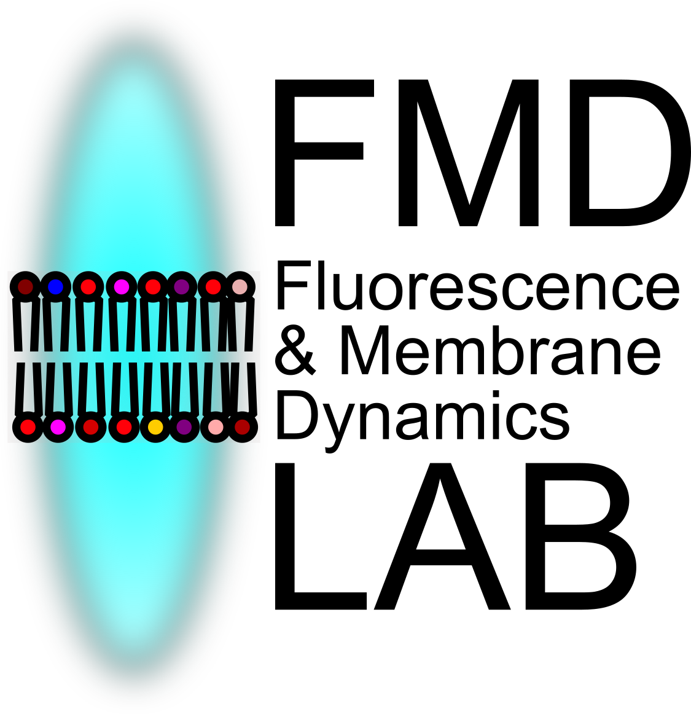

Welcome to the FMD Lab!
We are a team of interdisciplinary researchers at the University of Warwick.
We use fluorescence microscopy and spectroscopy techniques to study biological organisation across scales.
